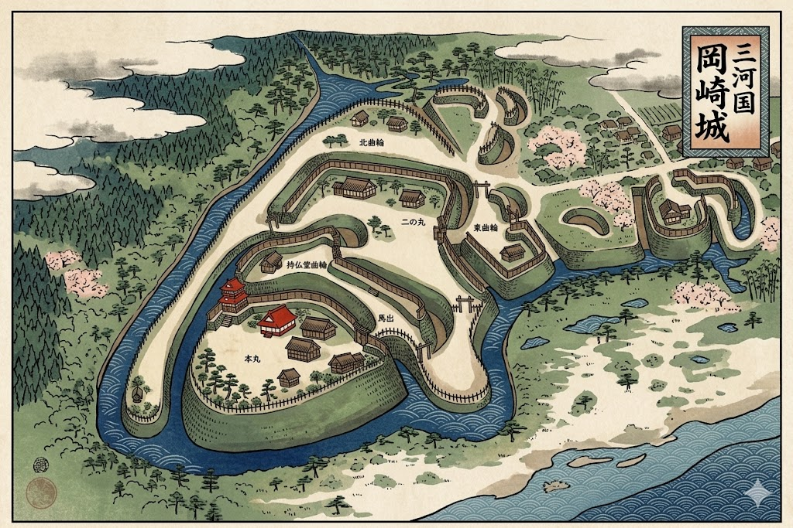
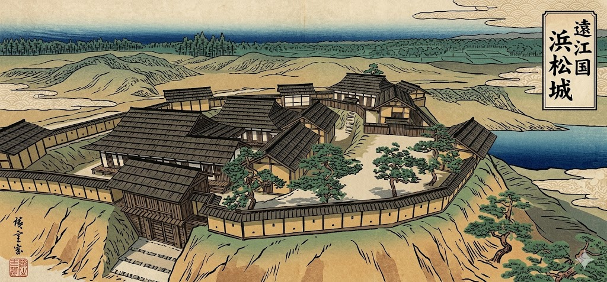
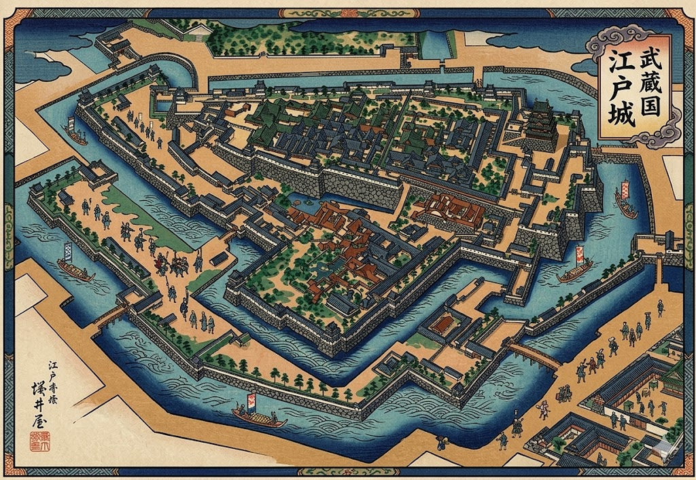
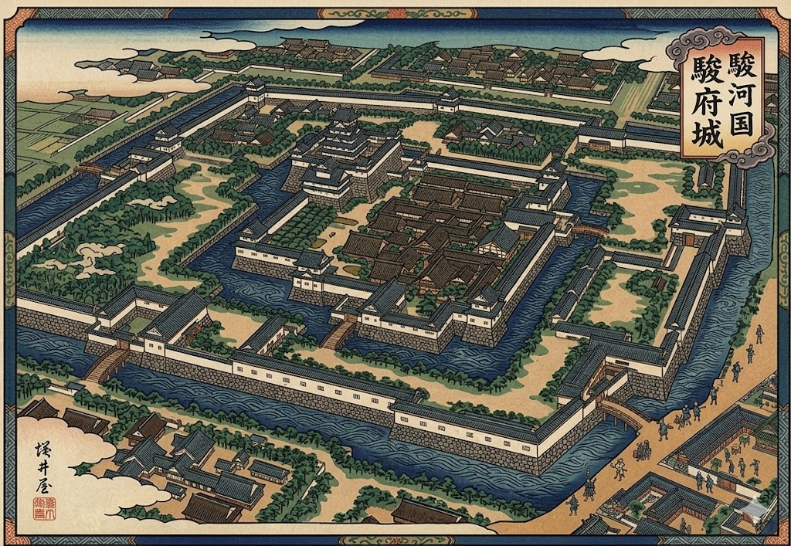

〜 家康公の忍耐と天下泰平の礎 〜
幾多、至難の苦節を乗り越え、二百六十年にわたる江戸幕府の平穏を築いた徳川家康。彼の縁の城郭は、戦い抜くための堅固な要塞から、天下を統治し平和を維持するための巨大都市へと発展していきました。

家康公が誕生した神聖なる地。徳川天下取りの出発点であり、数々の試練を共にした最強の三河武士団の精神的支柱となった名城です。

三方ヶ原の戦いなど、武田信玄との激闘を戦い抜いた拠点。多くの徳川重臣がここから出世していったため「出世城」としても有名です。

徳川幕府の本拠地であり、日本最大の規模を誇る大要塞。広大な堀と強固な桝形、精度高き天下普請によって築かれた至高の統治拠点です。

家康公が幼少期を過ごし、そして晩年に「大御所」として再び戻り天下を動かした終焉の城。三重の堀に守られた、大御所政治の舞台です。